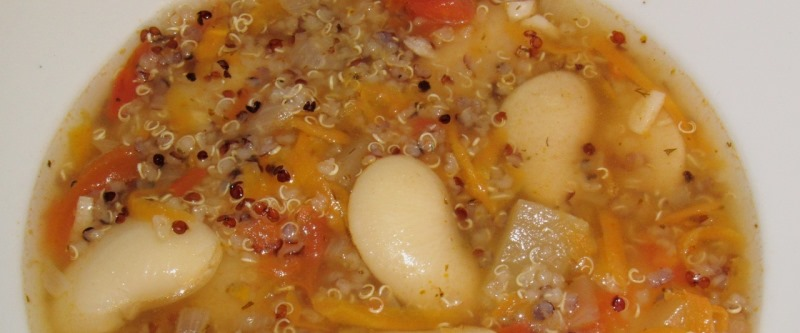

приготовление:
-
Мелко нарезать 2 луковицы, 2 моркови и 2 стебля сельдерея. Разогреть в большой кастрюле с толстым дном небольшое количество растительного масла. Добавить овощи и обжаривать на среднем огне 5 минут.
-
Мелко нарезать 2 зубчика чеснока. Добавить в кастрюлю чеснок и 400 г консервированной белой фасоли, перемешать и готовить ещё 2 минуты.
-
Добавить 400 г консервированных томатов и влить 2 л кипятка. Довести до кипения, убавить огонь и варить 20 минут.
-
Тщательно промыть 130 г киноа и добавить в суп. Добавить петрушку, орегано или другую зелень и лавровый лист. Варить ещё 15 минут, пока киноа не станет мягкой.
-
Посолить и поперчить по вкусу. Удалить лавровый лист перед подачей.